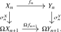

If \(C\) is an \(\infty \)-category with finite limits, there is a stable \(\infty \)-category \(\Sp (C)\) that universally ‘approximates \(C\) from the left’ by a stable \(\infty \)-category, known as the stabilization of \(C\). The stabilization comes equipped with a left exact functor \(\Sp (C) \to C\) satisfying the property that any other left exact functor \(D \to C\) from a stable \(\infty \)-category \(D\) uniquely factors through some left exact functor \(D \to \Sp (C)\). The following definition captures this more precisely:
Definition 4.3.1. A stabilization of an \(\infty \)-category \(C\) with finite limits is a stable \(\infty \)-category \(\Sp (C)\) equipped with a left exact functor \(\Omega ^{\infty }\colon \Sp (C) \to C\) such that for every stable \(\infty \)-category \(D\) the composition functor \[ \Omega ^{\infty } \circ -\colon \Fun ^{\ex }(D,\Sp (C)) \overset {}{=} \Fun ^{\lex }(D,\Sp (C)) \to \Fun ^{\lex }(D,C) \] is an equivalence, where the first equality holds by Corollary 4.2.27.
Note that this universal property uniquely determines the stabilization whenever it exists; in fact, it determines a right adjoint \(\Sp \colon \Cat ^{\lex }_{\infty } \to \Cat ^{\st }_{\infty }\) to the inclusion functor, cf. Corollary 4.3.17 below.
Example 4.3.2. The prototypical example is \(C = \An \), whose stabilization \(\Sp (\An )\) is the \(\infty \)-category of spectra \(\Sp \) that we will study in Section 4.4.
We prove the existence of \(\Sp (C)\) by providing an explicit construction: first we define prespectra as structured sequences in \(C_*\), and then we define spectra as those prespectra whose structure maps are isomorphisms. We will prove the following properties of \(\Sp (C)\) along the way:
- If \(C\) admits limits, then so does \(\Sp (C)\) (Lemma 4.3.18);
- If \(C\) admits colimits and the loop functor \(\Omega \colon C_* \to C_*\) preserves sequential colimits, then \(\Sp (C)\) admits colimits (Lemma 4.3.20);
- In the latter case, the functor \(\Omega ^{\infty }\colon \Sp (C) \to C\) admits a left adjoint \(\Sigma ^{\infty }\colon C \to \Sp (C)\) (Lemma 4.3.22 and Corollary 4.3.23).
4.3.1 Prespectra and spectrum objects
The construction of (pre)spectra we use closely matches the classical definition of a spectrum as a sequence of pointed spaces \(\{X_n\}\) equipped with maps \(X_n \to \Omega X_{n+1}\). We first allow these maps to be arbitrary; the stabilization is obtained by imposing that they be isomorphisms.
Definition 4.3.3 (Prespectra). Let \(C\) be an \(\infty \)-category admitting finite limits. Write \[ C_*^{\N } := \prod _{n \geq 0} C_* \] for the \(\infty \)-category of sequences of pointed objects of \(C\). We define the shift functor and the levelwise loop functor by \[ \sh \colon C_*^{\N } \to C_*^{\N }, \qquad (X_n)_{n \geq 0} \mapsto (X_{n+1})_{n \geq 0}, \] and \[ \Omega \colon C_*^{\N } \to C_*^{\N }, \qquad (X_n)_{n \geq 0} \mapsto (\Omega X_n)_{n \geq 0}. \] The \(\infty \)-category of prespectra in \(C\) is defined as \[ \PSp (C) := C_*^{\N } \times _{C_*^{\N } \times C_*^{\N }} \Ar (C_*^{\N }), \] where the map \(C_*^{\N } \to C_*^{\N } \times C_*^{\N }\) is \((\id ,\Omega \sh )\) and the map \(\Ar (C_*^{\N }) \to C_*^{\N } \times C_*^{\N }\) is the source-target functor \((s,t)\).
Unwinding definitions, a prespectrum \(X\) is a sequence \((X_n)_{n \geq 0}\) of pointed objects of \(C\), together with structure maps \[ \sigma ^X_n\colon X_n \to \Omega X_{n+1}. \] A morphism \(f\colon X \to Y\) of prespectra is a sequence of pointed maps \(f_n\colon X_n \to Y_n\) together with homotopies filling the squares

Definition 4.3.4 (Spectrum objects). Let \(C\) be an \(\infty \)-category admitting finite limits. We define its \(\infty \)-category of spectrum objects, or stabilization, as the full subcategory \[ \Sp (C) \subseteq \PSp (C) \] spanned by those prespectra \(X\) for which every structure map \(\sigma ^X_n\colon X_n \to \Omega X_{n+1}\) is an isomorphism. We denote the evaluation functors by \[ (-)_n\colon \Sp (C) \to C_*. \] The functor \((-)_0\colon \Sp (C) \to C_*\) will also be denoted by \(\Omega ^{\infty }\); when the target is written as \(C\), we implicitly compose with the forgetful functor \(C_* \to C\).
Remark 4.3.5. Assume \(C\) is a small \(\infty \)-category. Then the structure maps \(\sigma _n \colon (-)_n \iso \Omega (-)_{n+1}\) turn the functors \((-)_{n}\colon \Sp (C) \to C_*\) into a cone in \(\Cat _{\infty }\), resulting in a comparison functor \[ \Sp (C) \to \lim ( \dots \to C_* \xrightarrow {\Omega } C_* \xrightarrow {\Omega } C_*). \] This functor is an equivalence of \(\infty \)-categories.
Lemma 4.3.6. The functors \((-)_n\colon \PSp (C) \to C_*\) are jointly conservative. In particular, a morphism \(f\colon X \to Y\) of spectra in \(C\) is an isomorphism if and only if each induced map \(f_n\colon X_n \to Y_n\) is an isomorphism.
Proof. The projection \(\PSp (C) \to C_*^{\N }\) is conservative because a morphism in the arrow category is an isomorphism precisely when its source and target maps are isomorphisms. The projections \(C_*^{\N } \to C_*\) are jointly conservative by definition of the product. □
Lemma 4.3.7. Let \(X\) and \(Y\) be prespectra in \(C\). Then the hom anima \(\Hom _{\PSp (C)}(X,Y)\) is the equalizer of the two maps \[ \Hom _{C_*^{\N }}(X,Y) \rightrightarrows \Hom _{C_*^{\N }}(X,\Omega \sh Y). \] The first map sends \(f\colon X\to Y\) to the composite \[ X \xrightarrow {f} Y \xrightarrow {\sigma ^Y} \Omega \sh Y, \] and the second sends it to the composite \[ X \xrightarrow {\sigma ^X} \Omega \sh X \xrightarrow {\Omega \sh (f)} \Omega \sh Y. \]
Proof. This is just the definition of \(\PSp (C)\) as the lax equalizer of \(\id \) and \(\Omega \sh \). Indeed, a morphism \(X\to Y\) in \(\PSp (C)\) is a map of the underlying sequences together with a homotopy filling the square
Equivalently, it is a point of the stated equalizer. □
Lemma 4.3.8. Let \(I\) be an \(\infty \)-category.
- (1)
-
If \(C\) admits \(I\)-indexed limits, then \(\PSp (C)\) admits \(I\)-indexed limits and the projection \(\PSp (C) \to C_*^{\N }\) creates them.
- (2)
-
If \(C_*\) admits \(I\)-indexed colimits, then \(\PSp (C)\) admits \(I\)-indexed colimits and the projection \(\PSp (C) \to C_*^{\N }\) creates them.
Proof. For limits, let \(X\colon I \to \PSp (C)\) be a diagram and write \(\overline {X}\colon I \to C_*^{\N }\) for the underlying diagram of sequences. Since \(C_*\) has \(I\)-indexed limits and \(\Omega \) preserves limits, the endofunctor \(\Omega \sh \) preserves \(I\)-indexed limits. Hence the limit \(L := \lim _i \overline {X}_i\) in \(C_*^{\N }\) inherits a structure map \[ L \simeq \lim _i \overline {X}_i \to \lim _i \Omega \sh (\overline {X}_i) \simeq \Omega \sh (L), \] which makes it the limit in \(\PSp (C)\).
For colimits, let \(D := \colim _i \overline {X}_i\) in \(C_*^{\N }\). For every \(i\), the composite \[ \overline {X}_i \xrightarrow {\sigma ^{X_i}} \Omega \sh (\overline {X}_i) \to \Omega \sh (D) \] is compatible with the diagram, and therefore induces a structure map \(D \to \Omega \sh (D)\). We claim that the resulting prespectrum is the colimit. Indeed, for any prespectrum \(Y\) the hom anima \(\Hom _{\PSp (C)}(D,Y)\) is the equalizer of the two maps \[ \Hom _{C_*^{\N }}(D,Y) \rightrightarrows \Hom _{C_*^{\N }}(D,\Omega \sh Y) \] given by postcomposition with \(\sigma ^Y\) and precomposition with the structure map of \(D\), by Lemma 4.3.7. Since \(D\) is the colimit of the \(\overline {X}_i\) in \(C_*^{\N }\), and since limits commute with limits in \(\An \), this equalizer identifies with \[ \lim _i \Hom _{\PSp (C)}(X_i,Y), \] which is the desired universal property. □
We now turn to the main point: the loop functor on \(\Sp (C)\) is an equivalence. The naive argument is to shift levels, since \(X_n \simeq \Omega X_{n+1}\) by definition. The subtlety is that comparing the structure maps of \(X\) with those of \(\Omega (\shift X)\) requires identifying \(\Omega ^2\Omega \) with \(\Omega \Omega ^2\), and there are two ways to do so. The next results handle this coherence issue by passing first to an even-level model and then showing that the resulting automorphism of \(\Omega ^3\) is trivial.
Lemma 4.3.9. Let \(\PSp ^{(2)}(C)\) be the lax equalizer \[ \PSp ^{(2)}(C) := C_*^{\N }\times _{C_*^{\N }\times C_*^{\N }}\Ar (C_*^{\N }), \] where the map \(C_*^{\N }\to C_*^{\N }\times C_*^{\N }\) is \((\id ,\Omega ^2\sh )\) and the map from the arrow category is the source-target functor. Let \(\Sp ^{(2)}(C)\subseteq \PSp ^{(2)}(C)\) be the full subcategory spanned by those objects whose structure maps are isomorphisms. Then the even-level functor \[ E\colon \Sp (C) \to \Sp ^{(2)}(C), \qquad E(X)_k := X_{2k}, \] with structure maps \[ \widetilde {\sigma }^X_k\colon X_{2k} \xrightarrow {\sigma ^X_{2k}} \Omega X_{2k+1} \xrightarrow {\Omega (\sigma ^X_{2k+1})} \Omega ^2X_{2k+2}, \] is an equivalence.
Proof. We construct an inverse. Given \(Y\in \Sp ^{(2)}(C)\) with structure maps \(\tau _k\colon Y_k \iso \Omega ^2Y_{k+1}\), define a spectrum \(QY\) by \[ (QY)_{2k}:=Y_k \qquadtext { and } \qquad (QY)_{2k+1}:=\Omega Y_{k+1}. \] The structure maps of \(QY\) are \(\tau _k\colon Y_k\to \Omega ^2Y_{k+1}=\Omega (QY)_{2k+1}\) in even degrees and the identity map \(\Omega Y_{k+1}\to \Omega Y_{k+1}=\Omega (QY)_{2k+2}\) in odd degrees.
It is immediate that \(EQ=\id \). Conversely, for \(X\in \Sp (C)\) there is a natural isomorphism \(X\to QEX\) which is the identity in even degrees and the structure map \(\sigma ^X_{2k+1}\colon X_{2k+1}\to \Omega X_{2k+2}\) in odd degrees. The compatibility with the structure maps follows directly from the definition of \(\widetilde {\sigma }^X_k\). □
Remark 4.3.10. When \(C\) is small, the limit description of \(\Sp (C)\) from Remark 4.3.5 identifies \(\Sp ^{(2)}(C)\) with the analogous limit over the subdiagram indexed by the even natural numbers. Since these are cofinal, the result also follows formally from Theorem 21.5.1.
Next up, we need to understand the interaction of the double loop functor \(\Omega ^2\) with the loop functor \(\Omega \). If \(D\) is a pointed \(\infty \)-category with finite limits, the functor \(\Omega ^2\colon D \to D\) commutes with limits, and in particular commutes with the formation of loop objects. This provides a natural isomorphism \[ \Omega ^2(\Omega X) \xrightarrow {\cong } \Omega (\Omega ^2X). \] The following proposition records the specific case we need.
Proposition 4.3.11 (Universal property of finite animae). Let \(\An ^{\fin }\) denote the smallest full subcategory of \(\An \) which contains the point and is closed under finite colimits. For every \(\infty \)-category \(D\) with finite limits, evaluation at the point induces an equivalence \[ \ev _*\colon \Fun ^{\lex }((\An ^{\fin })\catop ,D) \iso D. \]
Proof. This is the opposite of the universal property of the free finite cocompletion of the point, which is a special case of Proposition 22.1.2. □
Lemma 4.3.12 (Universal property of finite pointed animae). Let \(\An _*^{\fin }\) be the small full subcategory of \(\An _*\) generated under finite colimits by \(S^0\). For every pointed \(\infty \)-category \(D\) with finite limits, evaluation at \(S^0\) induces an equivalence \[ \ev _{S^0}\colon \Fun ^{\lex }((\An _*^{\fin })\catop ,D) \iso D. \]
Proof. Precomposition with \((-)_+\colon \An ^{\fin }\to \An _*^{\fin }\) defines a functor \[ \Fun ^{\lex }((\An _*^{\fin })\catop ,D) \longrightarrow \Fun ^{\lex }((\An ^{\fin })\catop ,D). \] An inverse sends \(F\) to the functor \[ (Y,y)\longmapsto \fib (F(Y)\to F(*)). \] This is pointed and left exact. The two inverse identities follow from \(Y_+=Y\sqcup *\) and from the pushout \(Y_+\sqcup _{S^0}*\simeq (Y,y)\). The result now follows from Proposition 4.3.11. □
Proposition 4.3.13. For any pointed \(\infty \)-category \(D\) with finite limits, the composite map \[ \Omega ^3X \simeq \Omega ^2(\Omega X) \xrightarrow {\cong } \Omega (\Omega ^2X) \simeq \Omega ^3X \] is homotopic to the identity map on \(\Omega ^3X\), naturally in \(X \in D\).
Proof. Given \(X\in D\), Lemma 4.3.12 gives a pointed left exact functor \[ X^{(-)}\colon (\An _*^{\fin })\catop \to D \] satisfying \(X^{S^0}\simeq X\). Since \(X^{(-)}\) sends pushouts in \(\An _*^{\fin }\) to pullbacks in \(D\), we have \[ X^{S^{n+1}} \simeq X^{\Sigma S^n} \simeq \Omega X^{S^n} \] for every \(n\geq 0\). Thus the comparison automorphism of \(\Omega ^3X\) is induced by the analogous automorphism of \(S^3\) in \(\An _*^{\fin }\).
It remains to prove the claim in \(\An _*^{\fin }\) for the generator \(X = S^0\). We must show that the composite \[ \tau \colon S^3 \simeq \Sigma (\Sigma ^2S^0) \xrightarrow {\cong } \Sigma ^2(\Sigma S^0) \simeq S^3 \] is pointed homotopic to the identity. By Remark 2.4.20, it suffices to show that \(\tau \) has degree \(1\). Using the swap map \(\sigma _{X,Y}\) from Definition 2.4.10, we may identify \(\tau \) with \(\sigma _{S^1,S^2}\). The isomorphism \(S^2 \cong S^1 \wedge S^1\) from Lemma 2.4.16 then gives a decomposition \[ S^3 \simeq S^1\wedge S^1\wedge S^1 \xrightarrow {\id \wedge \sigma _{S^1,S^1}} S^1\wedge S^1\wedge S^1 \xrightarrow {\sigma _{S^1,S^1}\wedge \id } S^1\wedge S^1\wedge S^1 \simeq S^3. \] Both maps in this decomposition are suspensions of \(\sigma _{S^1,S^1}\), up to the natural identifications of smash products with suspensions. Their degrees are therefore equal to that of \(\sigma _{S^1,S^1}\) by Remark 2.4.20. Since this swap map is an isomorphism, its degree is \(\pm 1\). We conclude that \[ \deg (\tau )=\deg (\id \wedge \sigma _{S^1,S^1})\cdot \deg (\sigma _{S^1,S^1}\wedge \id )=\deg (\sigma _{S^1,S^1})^2=1, \] as desired. The construction is natural in \(X\), since the comparison is induced by the automorphism \(\tau \) of \(S^3\) under the equivalence of Lemma 4.3.12. □
Theorem 4.3.14. For every \(\infty \)-category \(C\) with finite limits, the \(\infty \)-category \(\Sp (C)\) is stable.
Proof. By Lemma 4.3.8, finite limits in \(\PSp (C)\) are computed pointwise. Since \(\Omega \) preserves finite limits, the full subcategory \(\Sp (C) \subseteq \PSp (C)\) is closed under finite limits. It is also pointed: the constant zero prespectrum is both initial and terminal, since the zero object of \(C_*\) is both initial and terminal.
It remains, by Theorem 4.2.2, to show that the loop functor on \(\Sp (C)\) is an equivalence. Define the shift functor \[ \shift \colon \Sp (C) \to \Sp (C), \qquad \shift (X)_n:=X_{n+1}, \] with structure maps inherited from \(X\). This functor is an equivalence: an inverse sends \(X\) to the spectrum \(\shift ^{-1}X\) with \[ (\shift ^{-1}X)_0:=\Omega X_0 \qquadtext { and } \qquad (\shift ^{-1}X)_n:=X_{n-1}\quad (n\geq 1), \] whose structure map in degree \(0\) is the identity of \(\Omega X_0\), and whose structure map in degree \(n\geq 1\) is \(\sigma ^X_{n-1}\).
We claim that there is a natural isomorphism \[ \alpha \colon X \xrightarrow {\cong } \Omega (\shift X). \] By Lemma 4.3.9, it suffices to construct this map after passing to the even-level model. There we set \[ \alpha _{2k}:=\sigma ^X_{2k}\colon X_{2k} \xrightarrow {\cong } \Omega X_{2k+1} = \Omega (\shift X)_{2k}. \] We must check compatibility with the two-step structure maps. For \(X\), the relevant structure map is \[ \widetilde {\sigma }^X_k = \left (X_{2k}\xrightarrow {\sigma ^X_{2k}}\Omega X_{2k+1} \xrightarrow {\Omega (\sigma ^X_{2k+1})}\Omega ^2X_{2k+2}\right ). \] For \(\Omega (\shift X)\), finite limits are computed pointwise, but its two-step structure map is not obtained by merely writing down the same composite with an extra \(\Omega \) in front. After precomposing with \(\alpha _{2k}=\sigma ^X_{2k}\), the first composite in the compatibility square is \[ X_{2k} \xrightarrow {\sigma ^X_{2k}} \Omega X_{2k+1} \xrightarrow {\Omega (\sigma ^X_{2k+1})} \Omega ^2X_{2k+2} \xrightarrow {\Omega (\Omega (\sigma ^X_{2k+2}))} \Omega (\Omega ^2X_{2k+3}) \xrightarrow {\cong } \Omega ^2(\Omega X_{2k+3}), \] where the final arrow is the canonical comparison coming from the fact that \(\Omega ^2\) preserves loop objects. The other composite in the compatibility square is \[ X_{2k} \xrightarrow {\sigma ^X_{2k}} \Omega X_{2k+1} \xrightarrow {\Omega (\sigma ^X_{2k+1})} \Omega ^2X_{2k+2} \xrightarrow {\Omega ^2(\sigma ^X_{2k+2})} \Omega ^2(\Omega X_{2k+3}). \] Thus the two composites whose equality is required differ only by the resulting automorphism of \(\Omega ^3X_{2k+3}\). This automorphism is the identity by Proposition 4.3.13. Hence \(\alpha \) is an isomorphism of spectra.
Consequently \(\id _{\Sp (C)}\simeq \Omega \circ \shift \). Since \(\shift \) is an equivalence, \(\Omega \) is an equivalence as well. □
Corollary 4.3.15. The suspension functor on \(\Sp (C)\) is naturally isomorphic to the shift functor. In particular, for every spectrum \(X\) and all \(m,n \geq 0\), there is a natural isomorphism \[ (X[n])_m \cong X_{m+n}. \]
Proof. The proof of Theorem 4.3.14 gives a natural isomorphism \(\id _{\Sp (C)} \cong \Omega \circ \shift \). Since \(\Sigma \) is inverse to \(\Omega \), this identifies \(\Sigma \) with \(\shift \). □
Proposition 4.3.16. For an \(\infty \)-category \(C\) with finite limits, the functor \(\Omega ^{\infty }\colon \Sp (C) \to C\) exhibits \(\Sp (C)\) as a stabilization of \(C\).
Proof. Let \(D\) be a stable \(\infty \)-category. We need to show that postcomposition with \(\Omega ^{\infty }\) induces an equivalence \[ \Fun ^{\lex }(D,\Sp (C)) \iso \Fun ^{\lex }(D,C). \]
We construct an inverse. Let \(F\colon D \to C\) be left exact. Since \(D\) is pointed, the functor \(F\) has a canonical lift to \(C_*\): the object \(F(d)\) is pointed by the map \(* \simeq F(0) \to F(d)\) induced by \(0 \to d\). For every \(n \geq 0\), define a functor \[ \widetilde {F}_n\colon D \to C_*, \qquad \widetilde {F}_n(d) := F(d[n]). \] The unit equivalences \(d[n] \to \Omega _Dd[n+1]\), together with left exactness of \(F\), provide natural isomorphisms \[ \widetilde {F}_n \iso \Omega \widetilde {F}_{n+1}. \] Explicitly, these are obtained by applying \(F\) to the unit equivalences and then using the natural isomorphisms \(F(\Omega _Dd[n+1]) \iso \Omega F(d[n+1])\) provided by left exactness. Thus the functors \(\widetilde {F}_n\) and these structure isomorphisms assemble into a functor \[ \widetilde {F}\colon D \to \Sp (C). \] This construction is natural in \(F\), and hence defines a functor \(\Fun ^{\lex }(D,C)\to \Fun ^{\lex }(D,\Sp (C))\). Since limits in \(\Sp (C)\) are computed levelwise, and since each shift \(d\mapsto d[n]\) is an equivalence of \(D\), the functor \(\widetilde {F}\) is left exact.
The composite \(\Omega ^{\infty }\widetilde {F}\) is \(F\), since evaluation at level zero gives \(\widetilde {F}(d)_0=F(d)\). Conversely, let \(G\colon D \to \Sp (C)\) be left exact. Since \(D\) and \(\Sp (C)\) are stable, \(G\) is exact by Corollary 4.2.27. Hence \[ G(d[n]) \simeq G(d)[n]. \] By Corollary 4.3.15, evaluation at level zero gives natural isomorphisms \[ (\Omega ^{\infty }G)(d[n]) = G(d[n])_0 \simeq G(d)_n. \] These isomorphisms are compatible with the structure maps, by naturality of the unit \(d[n]\to \Omega _Dd[n+1]\) and of the equivalence between suspension and shift in \(\Sp (C)\). Thus \(\widetilde {\Omega ^{\infty }G}\simeq G\), naturally in \(G\). □
Corollary 4.3.17. The fully faithful inclusion functor \(\Cat ^{\st }_{\infty } \hookrightarrow \Cat ^{\lex }_{\infty }\) admits a right adjoint \[ \Sp \colon \Cat ^{\lex }_{\infty } \to \Cat ^{\st }_{\infty } \] given on objects by sending \(C\) to its stabilization \(\Sp (C)\). The counit \(\Sp (C) \to C\) of the adjunction is given by \(\Omega ^{\infty }\).
Proof. By the pointwise criterion for adjunctions from Lemma 21.1.4, it suffices to show that for every stable \(\infty \)-category \(D\), composition with \(\Omega ^{\infty }\colon \Sp (C) \to C\) induces an equivalence \[ \Omega ^{\infty } \circ -\colon \Hom _{\Cat ^{\st }_{\infty }}(D,\Sp (C)) \iso \Hom _{\Cat ^{\lex }_{\infty }}(D,C). \] But since a functor \(D \to \Sp (C)\) is exact if and only if it is left exact, this map is obtained from the defining equivalence \(\Fun ^{\lex }(D,\Sp (C)) \iso \Fun ^{\lex }(D,C)\) by passing to groupoid cores. □
4.3.2 Spectrification and suspension spectra
We now explain how to compute colimits of spectra. The point is that colimits are easy in prespectra, and a prespectrum can be turned into a spectrum by repeatedly applying the shift-loop operation.
Lemma 4.3.18 (Limits of spectra). Let \(C\) be an \(\infty \)-category with finite limits. If \(C\) admits \(I\)-indexed limits, then \(\Sp (C)\) admits \(I\)-indexed limits, and the evaluation functors \((-)_n\colon \Sp (C) \to C_*\) preserve them.
Proof. By Lemma 4.3.8, the limit of a diagram of spectra can first be computed in \(\PSp (C)\). Since \(\Omega \) preserves limits, the structure maps of this pointwise limit are again equivalences. Thus the limit prespectrum is a spectrum. □
Proposition 4.3.19 (Spectrification). Let \(C\) be an \(\infty \)-category with finite limits and sequential colimits. Assume that \(\Omega \colon C_* \to C_*\) preserves sequential colimits. Then the inclusion \(\Sp (C) \hookrightarrow \PSp (C)\) admits a left adjoint \[ (-)^{\sp }\colon \PSp (C) \to \Sp (C), \qquad X \mapsto X^{\sp }, \] called the spectrification functor.
Proof. The endofunctor \(\Omega \sh \) of \(C_*^{\N }\) induces an endofunctor, still denoted \(\Omega \sh \), of \(\PSp (C)\) by \[ (\Omega \sh X)_n := \Omega X_{n+1}, \] with structure maps \(\Omega (\sigma ^X_{n+1})\colon \Omega X_{n+1} \to \Omega ^2X_{n+2}\). The structure maps of \(X\) define a natural map \(\eta _X\colon X \to \Omega \sh X\). Since \(\sh \) preserves colimits and \(\Omega \) preserves sequential colimits, the endofunctor \(\Omega \sh \) preserves sequential colimits of prespectra.
For a prespectrum \(X\), define \[ X^{\mathrm {sp}} := \colim \left ( X \xrightarrow {\eta _X} \Omega \sh X \xrightarrow {\Omega \sh (\eta _X)} (\Omega \sh )^2X \to \cdots \right ) \] in \(\PSp (C)\). Then \[ \Omega \sh (X^{\mathrm {sp}}) \simeq \colim _{k \geq 0} (\Omega \sh )^{k+1}X \simeq \colim _{k \geq 0} (\Omega \sh )^kX = X^{\mathrm {sp}}, \] where the second isomorphism uses that the successor map \(k \mapsto k+1\) is cofinal in \(\N \). Under this isomorphism, the structure map of \(X^{\mathrm {sp}}\) is an isomorphism, so \(X^{\mathrm {sp}}\) is a spectrum.
It remains to prove the universal property. Let \(Y\) be a spectrum. Since \(\eta _Y\colon Y \to \Omega \sh Y\) is an isomorphism, composition with \(\eta _X\) induces an equivalence \[ \Hom _{\PSp (C)}(\Omega \sh X,Y) \xrightarrow {\sim } \Hom _{\PSp (C)}(X,Y); \] an inverse sends a map \(f\colon X \to Y\) to the composite \(\Omega \sh X \xrightarrow {\Omega \sh (f)} \Omega \sh Y \xrightarrow {\eta _Y^{-1}} Y\). Therefore \[ \Hom _{\Sp (C)}(X^{\mathrm {sp}},Y) \simeq \lim _k \Hom _{\PSp (C)}((\Omega \sh )^kX,Y) \simeq \Hom _{\PSp (C)}(X,Y), \] which is the desired adjunction. □
Lemma 4.3.20 (Colimits of spectra). Let \(C\) be an \(\infty \)-category with finite limits and sequential colimits, and assume that \(\Omega \colon C_* \to C_*\) preserves sequential colimits. If \(C_*\) admits \(I\)-indexed colimits for some \(\infty \)-category \(I\), then \(\Sp (C)\) admits \(I\)-indexed colimits.
Proof. Let \(X\colon I \to \Sp (C)\) be a diagram. Compute its colimit in \(\PSp (C)\), where colimits are pointwise by Lemma 4.3.8, and then apply spectrification. Since spectrification is left adjoint to the inclusion \(\Sp (C) \hookrightarrow \PSp (C)\), the resulting spectrum has the universal property of the colimit in \(\Sp (C)\). □
Lemma 4.3.21. Filtered colimits in \(\Sp \) are computed levelwise. In particular, the functor \(\Omega ^{\infty }\colon \Sp \to \An \) preserves filtered colimits.
Proof. Filtered colimits in \(\An _*\) are created in \(\An \), and the loop functor \(\Omega \colon \An _* \to \An _*\) preserves them. Hence the levelwise colimit in \(\PSp (\An )\) of a filtered diagram of spectra again has isomorphisms as its structure maps, so it is already a spectrum. The final claim follows by evaluating at level zero. □
Lemma 4.3.22 (Suspension spectra). Let \(C\) be an \(\infty \)-category admitting finite limits, finite colimits, and sequential colimits, and assume that \(\Omega \colon C_* \to C_*\) preserves sequential colimits. Then the functor \(\Omega ^{\infty }\colon \Sp (C) \to C_*\) admits a left adjoint \[ \Sigma ^{\infty }\colon C_* \to \Sp (C). \]
Proof. First define the free prespectrum functor \[ \Sigma ^{\infty ,\pre }\colon C_* \to \PSp (C) \] by \[ \Sigma ^{\infty ,\pre }(X)_n := \Sigma ^n X, \] with structure maps \(\Sigma ^nX \to \Omega \Sigma ^{n+1}X\) given by the unit of the adjunction \(\Sigma \dashv \Omega \) in \(C_*\). We claim that \(\Sigma ^{\infty ,\pre }\) is left adjoint to evaluation at level zero \(\ev _0\colon \PSp (C) \to C_*\). Indeed, a map \(\Sigma ^{\infty ,\pre }(X) \to Y\) is determined by its level-zero component \(X \to Y_0\): once \(f_n\colon \Sigma ^nX \to Y_n\) is known, compatibility with the structure maps forces \(f_{n+1}\colon \Sigma ^{n+1}X \to Y_{n+1}\) to be adjoint to the composite \[ \Sigma ^nX \xrightarrow {f_n} Y_n \xrightarrow {\sigma ^Y_n} \Omega Y_{n+1}. \] Conversely, this recursive construction produces a compatible map of prespectra. The construction is natural in \(X\) and \(Y\) and applies equally to parametrized families of maps, so it gives an isomorphism of hom animae \[ \Hom _{\PSp (C)}(\Sigma ^{\infty ,\pre }X,Y) \simeq \Hom _{C_*}(X,Y_0). \]
Now set \[ \Sigma ^{\infty }(X) := (\Sigma ^{\infty ,\pre }X)^{\mathrm {sp}}. \] For \(Y \in \Sp (C)\), spectrification gives natural equivalences \[ \Hom _{\Sp (C)}(\Sigma ^{\infty }X,Y) \simeq \Hom _{\PSp (C)}(\Sigma ^{\infty ,\pre }X,Y) \simeq \Hom _{C_*}(X,\Omega ^{\infty }Y), \] which proves the adjunction. □
Corollary 4.3.23. In the situation of Lemma 4.3.22, the functor \(\Omega ^{\infty }\colon \Sp (C) \to C\) admits a left adjoint \[ \Sigma ^{\infty }_+\colon C \to \Sp (C) \] given by \(\Sigma ^{\infty }_+(X) := \Sigma ^{\infty }(X_+)\), where \(X_+ := X\sqcup *\).
Proof. Since adjunctions compose, this is immediate from the previous lemma and the fact that a left adjoint to the forgetful functor \(C_* \to C\) is given by \((-)_+\colon C \to C_*, \, X \mapsto X_+ := X \sqcup *\). □
4.3.3 Standard presentations
Spectrification also gives a canonical way to build a spectrum from its levels.
Definition 4.3.24. Let \(C\) be an \(\infty \)-category with finite limits. For \(n \geq 0\), define \[ \Omega ^{\infty - n} \colon \Sp (C) \to C_*, \qquad \qquad \Omega ^{\infty - n}(X) := \Omega ^{\infty }(X[n]), \] where \(X[n]\) denotes the \(n\)-fold suspension of \(X\) in the stable \(\infty \)-category \(\Sp (C)\). By Corollary 4.3.15, this functor evaluates at the \(n\)-th level in the prespectrum model: \(\Omega ^{\infty - n}(X) \simeq X_n\).
Lemma 4.3.25. Let \(C\) be an \(\infty \)-category with finite limits. For \(n \geq 0\) there are natural isomorphisms \[ \Omega ^n \Omega ^{\infty - n} \cong \Omega ^{\infty } \qquadtext { and } \Omega \Omega ^{\infty - (n+1)} \cong \Omega ^{\infty - n}. \]
Proof. This follows from stability of \(\Sp (C)\) and the fact that \(\Omega ^{\infty }\colon \Sp (C)\to C_*\) preserves finite limits. □
Lemma 4.3.26. In the situation of Lemma 4.3.22, the functor \(\Omega ^{\infty - n} \colon \Sp (C) \to C_*\) admits a left adjoint \[ \Sigma ^{\infty - n}\colon C_* \to \Sp (C) \] given by \(\Sigma ^{\infty - n}(X) := (\Sigma ^{\infty }(X))[-n]\). It satisfies the relations \[ \Sigma ^{\infty - n} \Sigma ^n \cong \Sigma ^{\infty } \qquadtext { and } \Sigma ^{\infty - (n+1)} \Sigma \simeq \Sigma ^{\infty - n}. \]
Proof. Since adjunctions compose, the functor \((\Sigma ^{\infty }(-))[-n]\) is left adjoint to \(\Omega ^{\infty }((-)[n])=\Omega ^{\infty -n}\). The stated relations follow by passing to left adjoints in the previous lemma. □
Remark 4.3.27. In the situation of Lemma 4.3.22, the suspension spectrum \(\Sigma ^{\infty }(X)\) of a pointed object \(X\in C_*\) is the spectrification of the suspension prespectrum \[ (X,\Sigma X,\Sigma ^2X,\dots ). \] Equivalently, its \(n\)-th level is given by \[ \Sigma ^{\infty }(X)_n \simeq \colim _{k \geq 0} \Omega ^k \Sigma ^{k+n}X. \] The structure maps are the inverses of the natural isomorphisms \[ \Omega \Sigma ^{\infty }(X)_{n+1} \simeq \Omega ( \colim _{k \geq 0} \Omega ^k \Sigma ^{k+n+1} X) \simeq \colim _{k \geq 0} \Omega ^{k+1}\Sigma ^{k+n+1} X \simeq \Sigma ^{\infty }(X)_n, \] where we use that \(\Omega \colon C_* \to C_*\) preserves sequential colimits.
Exercise 4.3.28. In the situation of Lemma 4.3.22, use the prespectrum model to verify directly that for any spectrum \(Y \in \Sp (C)\) and any pointed object \(X \in C_*\) there is a natural isomorphism \[ \Hom _{\Sp (C)}(\Sigma ^{\infty }X, Y) \iso \Hom _{C_*}(X,\Omega ^{\infty }Y). \]
Proposition 4.3.29 (Associated spectrum). In the situation of Lemma 4.3.22, let \(X\) be a prespectrum in \(C\). Its associated spectrum \(X^{\mathrm {sp}}\) is naturally isomorphic to the following colimit in \(\Sp (C)\): \[ X^{\mathrm {sp}} \quad \simeq \quad \colim ( \, \Sigma ^{\infty }X_0 \to \Sigma ^{\infty -1}X_1 \to \Sigma ^{\infty -2}X_2 \to \Sigma ^{\infty -3}X_3 \to \cdots \, ). \] Here the \(n\)-th transition map is given by the composite \[ \Sigma ^{\infty - n} X_n \xrightarrow {\cong } \Sigma ^{\infty - (n+1)} \Sigma X_n \xrightarrow {\Sigma \sigma ^X_n} \Sigma ^{\infty - (n+1)} \Sigma \Omega X_{n+1} \xrightarrow {\epsilon } \Sigma ^{\infty - (n+1)}X_{n+1}, \] where the first isomorphism is from Lemma 4.3.26, and the last map is induced by the counit \(\epsilon \colon \Sigma \Omega \to \id \) of the adjunction \(\Sigma \dashv \Omega \) on \(C_*\).
Proof. Let \(Y\) be a spectrum in \(\Sp (C)\). Mapping out of the displayed colimit gives \[ \lim _n \Hom _{\Sp (C)}(\Sigma ^{\infty -n}X_n,Y) \simeq \lim _n \Hom _{C_*}(X_n,\Omega ^{\infty -n}Y). \] The transition maps in this limit are precisely the compatibility conditions for a map of prespectra \(X \to Y\). Hence the right-hand side identifies with \(\Hom _{\PSp (C)}(X,Y)\). By the spectrification adjunction from Proposition 4.3.19, this is naturally equivalent to \(\Hom _{\Sp (C)}(X^{\mathrm {sp}},Y)\). The claim follows from Yoneda. □
Corollary 4.3.30 (Standard presentation). In the situation of Lemma 4.3.22, every spectrum \(X \in \Sp (C)\) is naturally isomorphic to the spectrum associated to its underlying prespectrum: \[ \colim _{n \geq 0} \Sigma ^{\infty -n} X_n \quad \xrightarrow {\cong } \quad X, \] where \(X_n=\Omega ^{\infty -n}X\).
Proof. Apply the previous proposition to the underlying prespectrum of \(X\). Since \(X\) is already a spectrum, spectrification fixes it. □
Generated from the authoritative LaTeX source.